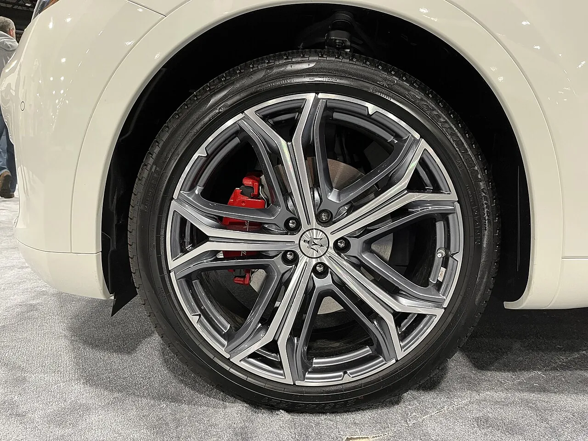
Inspection보이지 않는 곳까지,
보이지 않는 곳까지,
여섯 영역 정밀 점검
엔진과 하체, 전장과 도장까지 테크니션이 직접 확인합니다
배기음에 고개가 돌아가고 주차장에서 한 번 더 뒤돌아보게 되는 차 화려한 수식어보다 한 번의 시동이 더 많은 것을 말해 주는 차 마세라티는 그런 차입니다
볼로냐에서 시작된 해
이어 온 역사
지금 만날 수 있는 모델
전담 컨설턴트
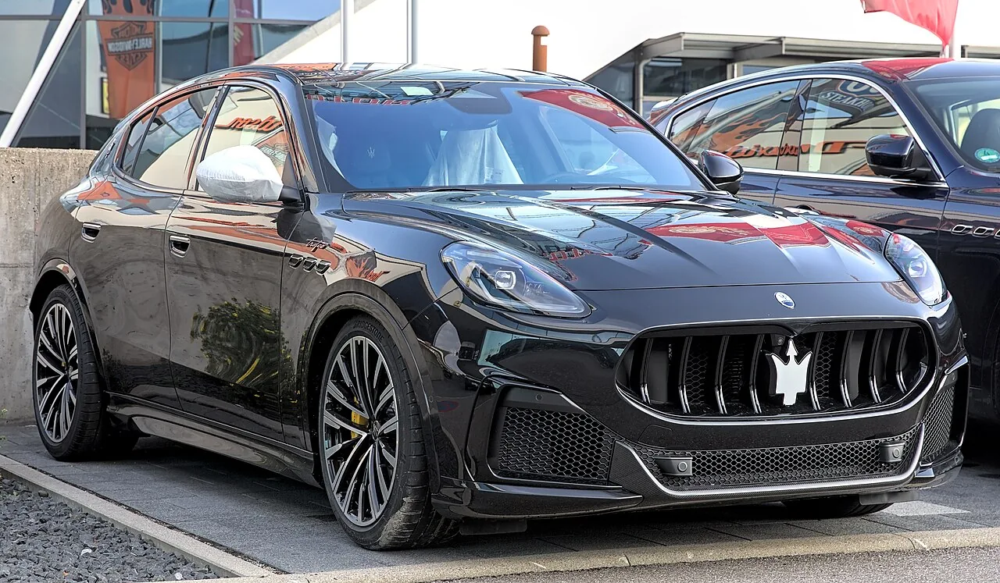
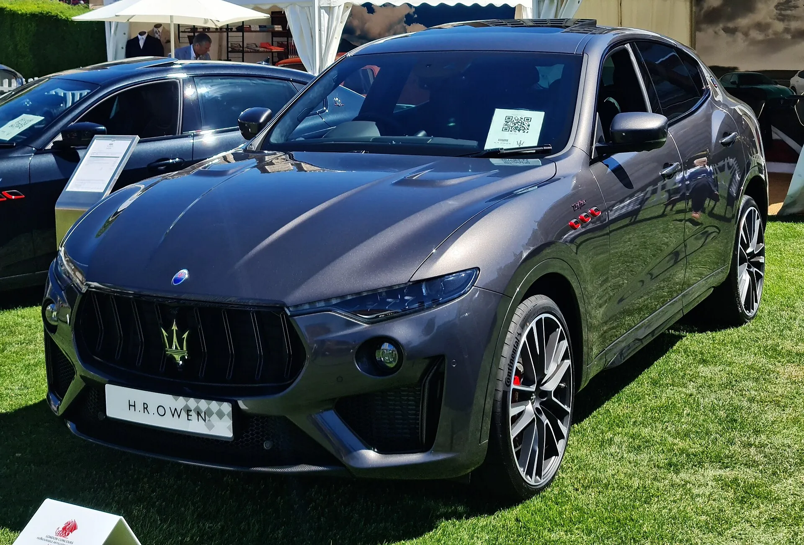
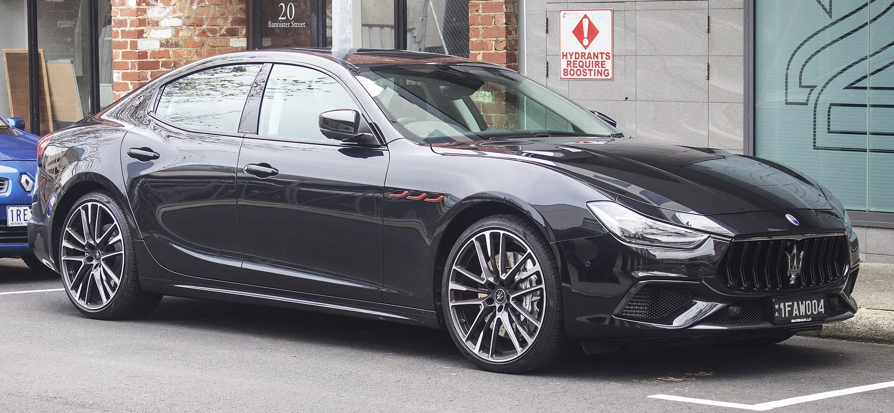
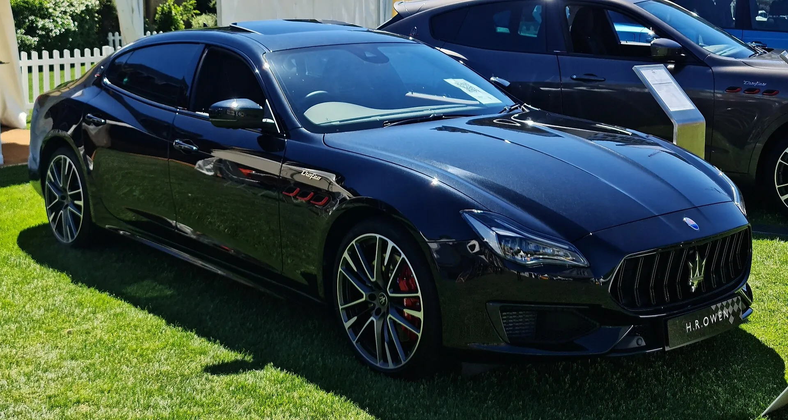
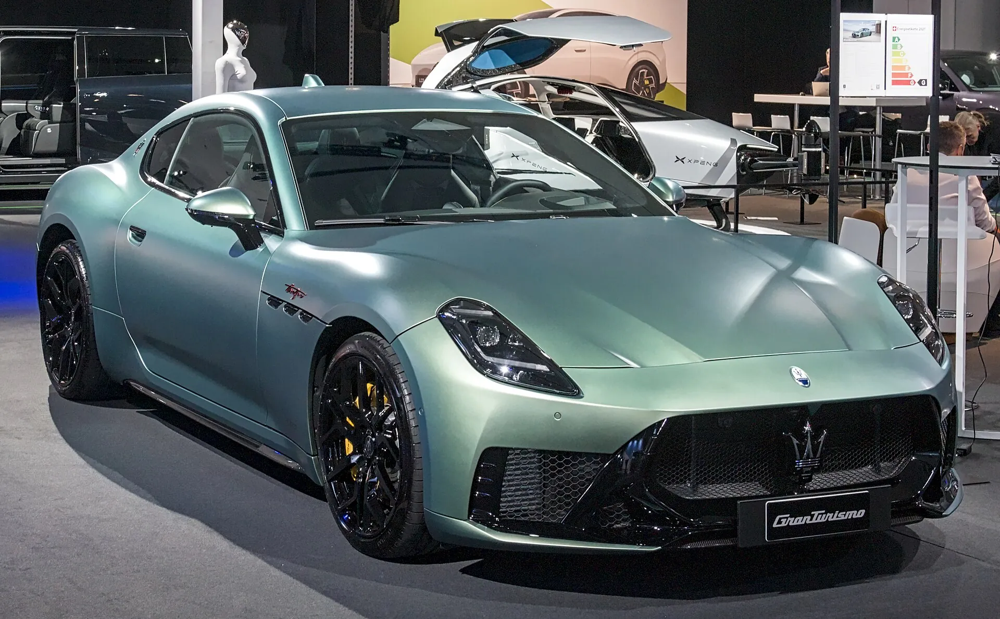
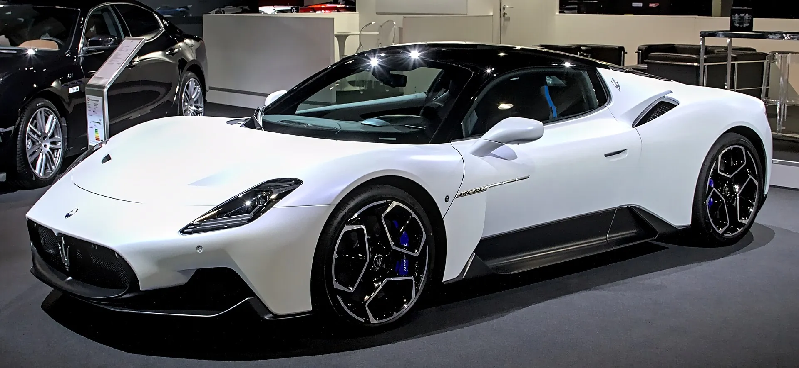
Six Ways
to Maserati
아래로 내려가며 한 대씩 만나 보세요
이름의 유래부터 실내, 걸어온 길까지 이어집니다
Feel It
Don’t Explain It
그래서 고르는 일은 마음에 맡기셔도 됩니다
확인하는 일은 저희가 끝내 두었습니다
Chosen by Heart
Proven by Check

엔진과 하체, 전장과 도장까지 테크니션이 직접 확인합니다
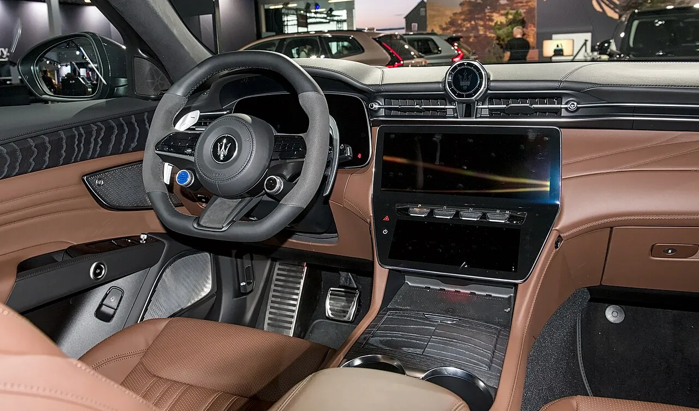
사고·소유·정비 이력을 확인한 차량만 매물이 됩니다
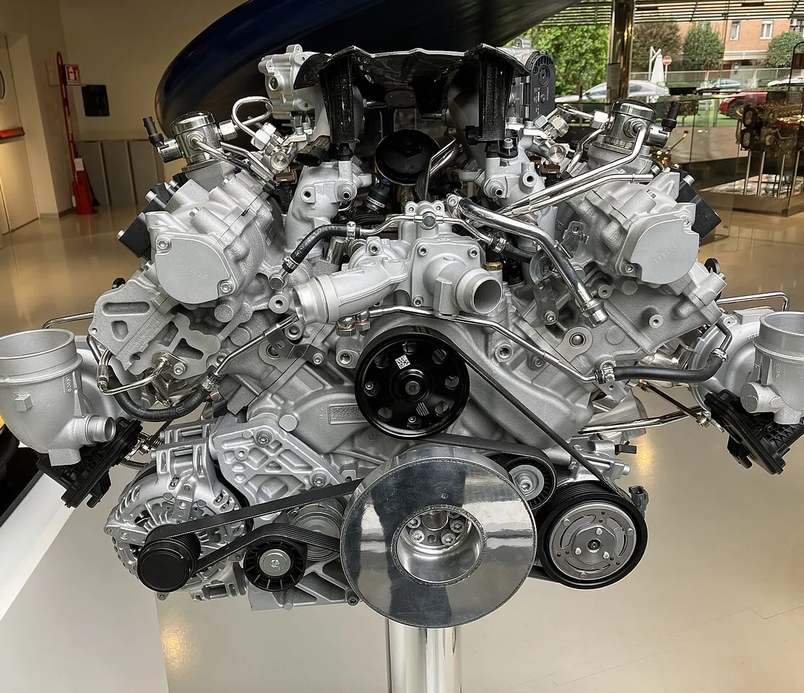
보증 기간과 범위는 차량별 보증서에 분명히 적어 드립니다
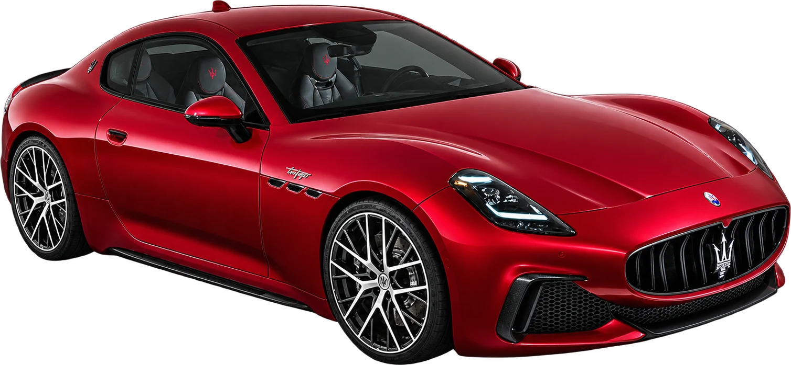
그레칼레, 르반떼, 기블리, 콰트로포르테, 그란투리스모, MC20.
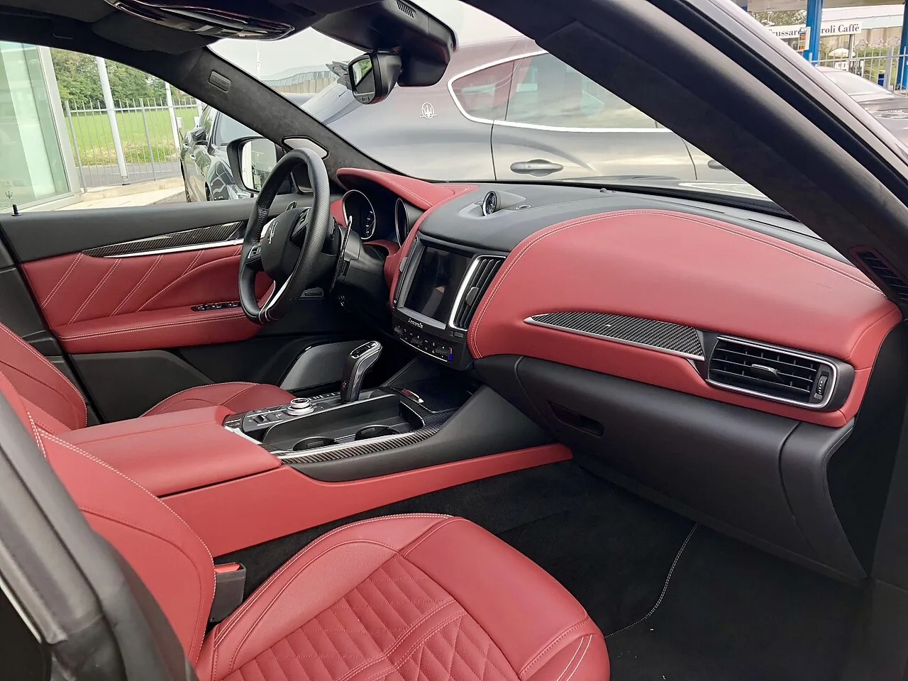
상담, 시승, 계약, 인도까지 같은 담당자가 함께합니다
Certified
in Four Checks
한 단계라도 기준에 미치지 못하면 매물로 올리지 않습니다
사고와 침수 여부, 주행거리, 소유 이력, 정비 기록을 먼저 확인합니다
기준에 맞지 않는 차량은 매입 단계에서 제외합니다
엔진과 변속기부터 전장, 하체, 도장까지 여섯 영역을 테크니션이 직접 점검합니다
결과는 차량별 리포트로 남깁니다
점검에서 확인된 소모품과 부품을 교체하고, 외장과 실내를 꼼꼼히 복원합니다
전시장에 서는 차는 바로 탈 수 있는 상태입니다
인증 차량에는 보증이 함께합니다
기간과 범위는 차량별 보증서에 분명히 적어 드리고, 전담 컨설턴트가 이후 관리까지 안내합니다
Six-Point
Inspection
차 한 대를 여섯 개의 눈으로 나누어 봅니다
엔진과 변속기의 작동 상태, 누유 여부, 냉각 계통을 확인합니다
리프트에 올려 하체 부식, 부싱, 쇼크 업소버, 조향 계통을 살핍니다
패드와 디스크 잔량, 타이어 마모 상태와 제조 시기를 확인합니다
진단기로 고장 코드를 조회하고 편의 장치의 작동을 하나씩 확인합니다
패널별 도막 두께를 측정해 판금·교환 여부를 확인합니다
시트와 트림, 공조, 선루프 등 실내 장치의 상태와 작동을 점검합니다
Report
Available
Now
Four Steps
to Yours
전화나 온라인으로 관심 모델과 방문 일정을 알려 주세요
전시장에서 점검 리포트와 함께 실차를 확인하고 시승합니다
할부와 리스, 타던 차량 매각까지 조건에 맞춰 안내합니다
보증서와 함께 차량을 인도하고 이후 관리를 이어 갑니다
FAQ
이력 검증, 정밀 점검, 상품화, 보증의 네 단계를 모두 통과한 차량만 인증 매물로 판매합니다
점검 결과와 이력은 차량별로 공개합니다
보증 기간과 범위는 차량의 연식과 주행거리에 따라 다르며, 계약 전에 차량별 보증서로 안내해 드립니다
네
상담 예약 시 원하는 차량과 일정을 알려 주시면 시승을 준비해 드립니다
가능합니다
상담 시 차량 정보를 알려 주시면 매입 견적을 함께 안내해 드립니다
네
할부와 리스 모두 상담할 수 있으며, 금리와 한도는 금융사 심사 결과에 따라 달라집니다
Talk
to Us
관심 모델과 연락처를 남겨 주시면 일정에 맞춰 상담을 준비합니다
Certified Inventory
모든 매물은 이력 검증과 정밀 점검을 마친 차량입니다
아래 이미지는 상업적 이용이 허용된 라이선스에 따라 사용했습니다
| 이미지 | 저작자 · 원본 | 라이선스 · 변경 |
|---|---|---|
| 그레칼레 | Alexander Migl · Wikimedia Commons | CC BY-SA 4.0 · 배경 제거, 번호판 가림 |
| MC20 | Alexander Migl · Wikimedia Commons | CC BY-SA 4.0 · 배경 제거 |
| 실내 (스티어링 휠) | Alexander Migl · Wikimedia Commons | CC BY-SA 4.0 · 일부 잘라냄 |
| 실내 (레드 가죽) | GinaCostanza76 · Wikimedia Commons | CC BY-SA 4.0 |
| 엔진 | pelican-actor · Wikimedia Commons | CC BY 2.0 · 일부 잘라냄 |
| 휠 | Corqe · Wikimedia Commons | CC0 1.0 |
| 그레칼레 · 대표 사진 | Alexander Migl · Wikimedia Commons | CC BY-SA 4.0 · 크기 조정 |
| 그레칼레 · 실내 | Alexander Migl · Wikimedia Commons | CC BY-SA 4.0 · 크기 조정 |
| 그레칼레 · 뒷모습 | Ethan Llamas · Wikimedia Commons | CC BY-SA 4.0 · 크기 조정 |
| 르반떼 · 대표 사진 | MrWalkr · Wikimedia Commons | CC BY-SA 4.0 · 크기 조정 |
| 르반떼 · 실내 | Malchick743 (ALJMW/MGJMW) · Wikimedia Commons | CC BY-SA 4.0 · 크기 조정 |
| 르반떼 · 뒷모습 | Alexander-93 · Wikimedia Commons | CC BY-SA 4.0 · 크기 조정 |
| 기블리 · 대표 사진 | LuvsMG481 · Wikimedia Commons | CC BY-SA 4.0 · 크기 조정 |
| 기블리 · 실내 | Vauxford · Wikimedia Commons | CC BY-SA 4.0 · 크기 조정 |
| 기블리 · 뒷모습 | Alexander-93 · Wikimedia Commons | CC BY-SA 4.0 · 크기 조정 |
| 기블리 · 역사 사진 1 | Spanish Coches · Wikimedia Commons | CC BY 2.0 · 크기 조정 |
| 콰트로포르테 · 대표 사진 | MrWalkr · Wikimedia Commons | CC BY-SA 4.0 · 크기 조정 |
| 콰트로포르테 · 실내 | RpM Tartar · Wikimedia Commons | CC BY-SA 4.0 · 크기 조정 |
| 콰트로포르테 · 뒷모습 | Alexander-93 · Wikimedia Commons | CC BY-SA 4.0 · 크기 조정 |
| 콰트로포르테 · 역사 사진 1 | TKOIII · Wikimedia Commons | CC BY-SA 4.0 · 크기 조정 |
| 콰트로포르테 · 역사 사진 2 | MercurySable99 · Wikimedia Commons | CC BY-SA 4.0 · 크기 조정 |
| 그란투리스모 · 대표 사진 | Alexander Migl · Wikimedia Commons | CC BY-SA 4.0 · 크기 조정 |
| 그란투리스모 · 실내 | Alexander Migl · Wikimedia Commons | CC BY-SA 4.0 · 크기 조정 |
| 그란투리스모 · 뒷모습 | Alexander Migl · Wikimedia Commons | CC BY-SA 4.0 · 크기 조정 |
| 그란투리스모 · 역사 사진 1 | Thesupermat · Wikimedia Commons | CC BY-SA 3.0 · 크기 조정 |
| 그란투리스모 · 역사 사진 2 | MrWalkr · Wikimedia Commons | CC BY-SA 4.0 · 크기 조정 |
| 그란투리스모 · 역사 사진 3 | Vauxford · Wikimedia Commons | CC BY-SA 4.0 · 크기 조정 |
| MC20 · 대표 사진 | Alexander Migl · Wikimedia Commons | CC BY-SA 4.0 · 크기 조정 |
| MC20 · 뒷모습 | Mr.choppers · Wikimedia Commons | CC BY-SA 3.0 · 크기 조정 |
| MC20 · 역사 사진 1 | MrWalkr · Wikimedia Commons | CC BY-SA 4.0 · 크기 조정 |
| 콰트로포르테 · 그란투리스모 · 르반떼 · 기블리 (배경 없는 차량 이미지) | 자체 제공 | — |